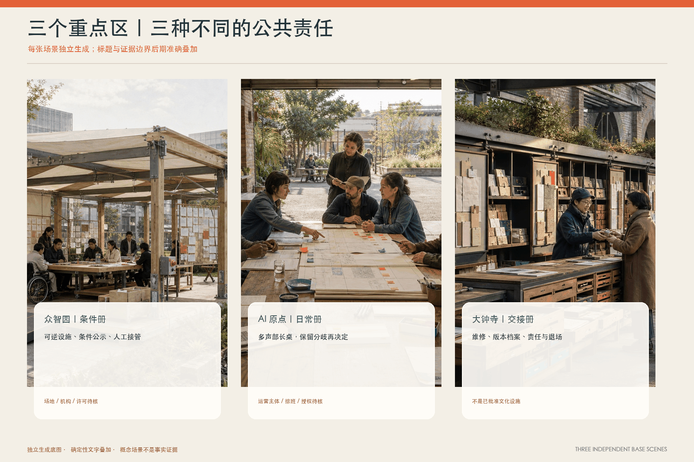
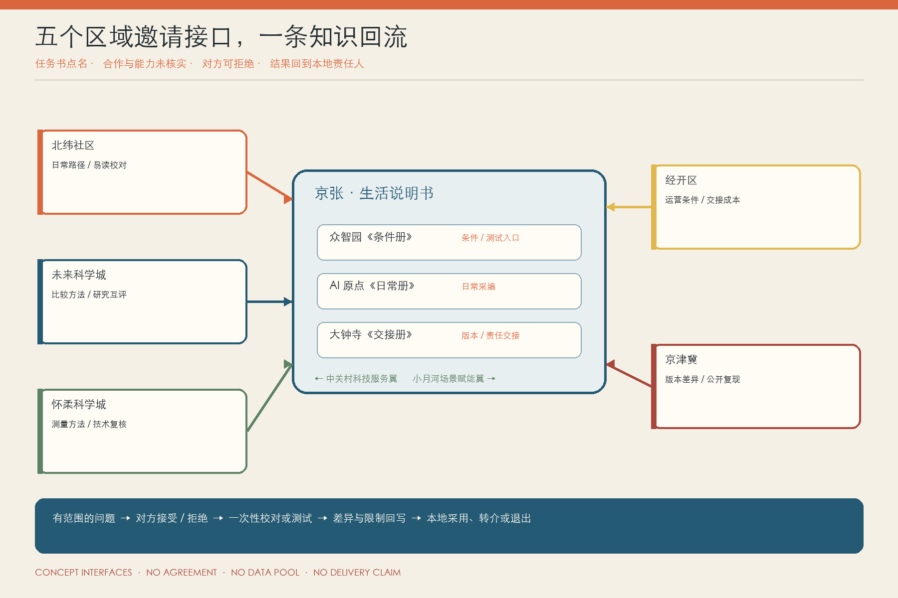
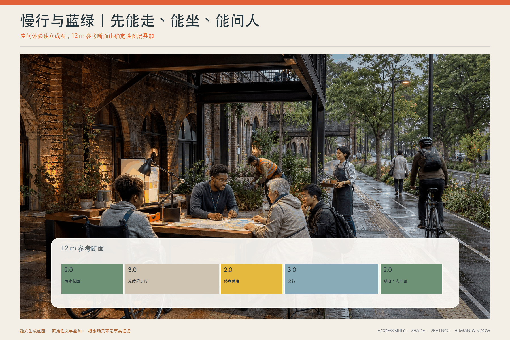
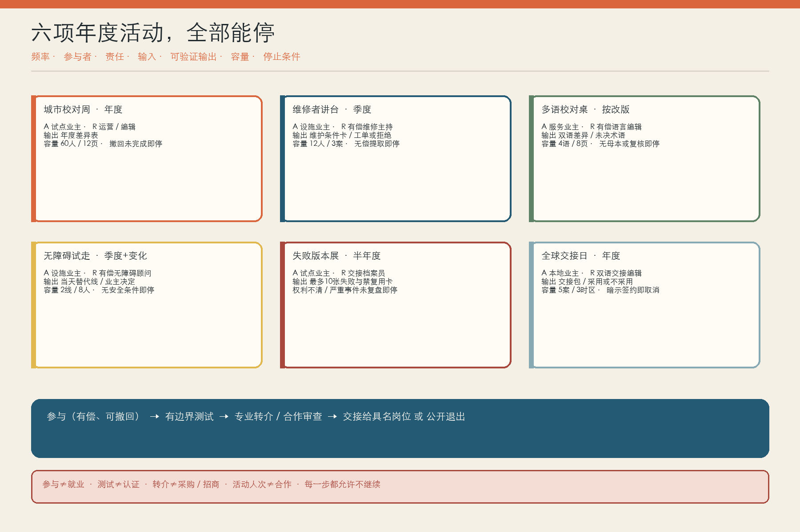
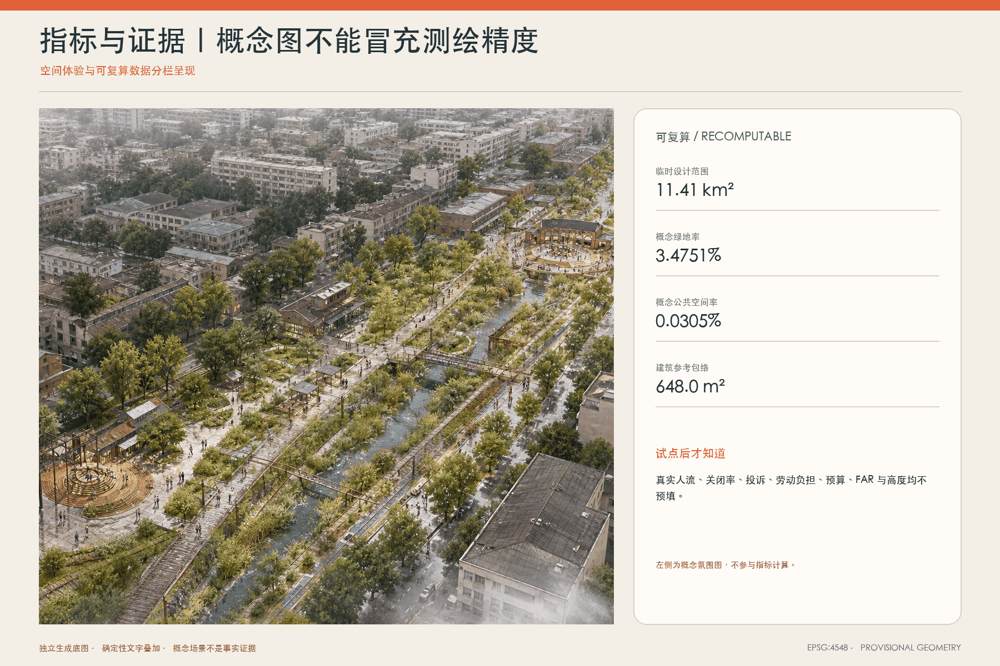

01 · 总览地图 / 三层范围 / 用地分区
一条装订线，把空间和责任装在一起
地图只表达临时边界内的设计关系：六张斜向活页、六条边注横页、绿脊、九处小型公共节点和三个非监管参考包络。

02 · 重点区域
三本分册，不是三个同款园区
01众智园《条件册》
空白第一页：先写清技术不知道什么、失败时谁接手。
02AI 原点《日常册》
多声部长桌：早午晚与雨后的分歧并排存在。
03大钟寺《交接册》
交接书脊：把维修、版本、责任与退场交给下一轮。

03 · 区域协同回路
五个邀请接口，不是五项合作承诺
北纬社区、未来科学城、怀柔科学城、经开区与京津冀目前只有任务书点名；合作、能力、数据、场地与责任单位均待核实。每个接口都允许拒绝，结果必须回写到本地页面，由本地责任人采用、转介或退出。

概念接口｜没有合作协议｜没有跨域数据池｜不声称共建、落地或联动成效
04 · AI 场景
十二张活页，从普通问题开始
点击一张活页；每一页都必须写 AI 的窄任务、人类责任、到期与停止条件。
05 · 人、建筑与数据边界
AI 不在责任矩阵里
- A 具名公共/服务业主
- R 有偿社区编辑
- R 现场核验/空间翻译员
- R 行动或转交责任人
- C 隐私·无障碍·遗产·安全
- AI 不承担 A/R
六个人物是合成探针，不是代表性样本。六个边注口是借用空间中的人工服务点，不是六栋建筑。

06 · 更新项目 / 交通慢行 / 蓝绿公共空间
先做两站，24 周，到点能停

- Gate 0：业主、付费角色、场地、专业审查和转介
- 8 周：两站三种低风险场景准备
- 12 周：带无 AI 对照的真实试点
- 4 周：公开采用、拒绝、撤回、到期与交接
无具名负责人｜无付费岗位｜默认敏感原始数据｜强制实名/追踪｜抹去分歧｜无现场核验｜无人工路线｜安全事件｜超容量｜没人接行动
07 · Agent.6 年度运营
六项活动，都要有容量和停止条件
城市校对周、维修者讲台、多语校对桌、无障碍试走、失败版本展、全球交接日只在具名责任、预算、补偿、可验证输出和退出路线齐备时举行。

参与 ≠ 就业｜测试 ≠ 认证｜转介 ≠ 采购或招商｜活动人次 ≠ 合作｜任何一步都允许不继续
08 · 核心指标
11.41 km²临时总体边界
3.48%概念绿地率
0.030%概念公共空间率
648 m²三个参考包络合计
09 · 任务覆盖 / 自检状态 / 来源 / 假设
读得到，也能追到结构化证据
六项 Agent 任务、十五项设计深度、专业标准、23 项公告要求、几何和指标分别映射到三个矩阵与 JSON/GeoJSON。官方边界、控规、文保、市政、预算与真实成效仍明确为 provisional 或 unknown。
总览地图三层范围重点区域用地分区交通慢行蓝绿公共空间建筑更新项目AI 场景核心指标任务覆盖自检状态来源假设
